Crop and straighten
Handles on the photo, common ratios, straighten up to 45°, quarter turns and flips. The crop is taken from your original pixels, never from the preview.
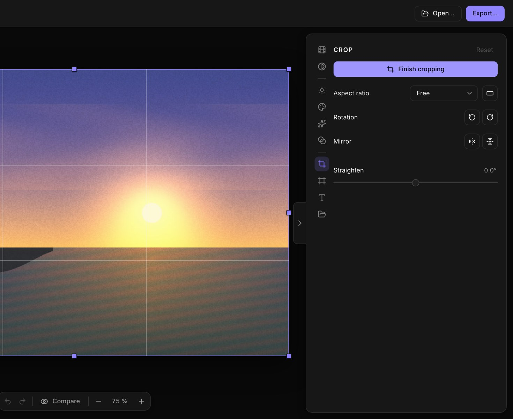
Free · Open source · macOS, Windows, Linux
Grain, halation and colour inspired by film, then a frame to match: a 35 mm strip, an instant print, a cinema crop. qFilm is a small desktop app that does one thing well, and keeps your photos on your computer.
Early access: public builds are on their way.
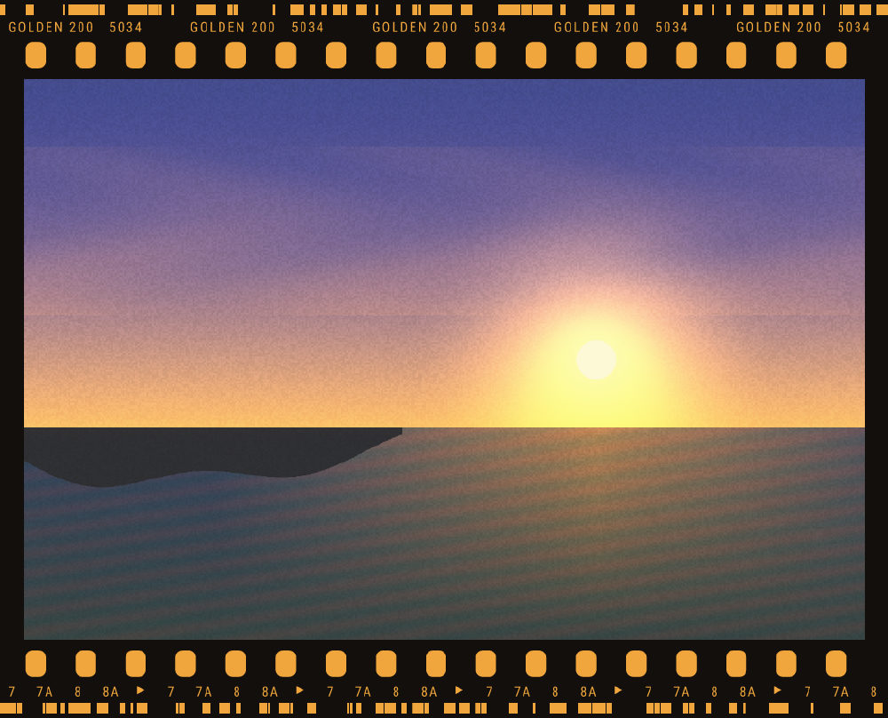
How it works
Drop a JPEG, PNG or TIFF. Your original is never touched.
33 film-inspired looks. Slide the intensity, then fine-tune.
A film strip, an instant print, a cinema crop, or your own, with a caption you can move around.
JPEG, PNG or 16-bit TIFF, full size or resized, with the original EXIF if you want it.
Looks
Every look is built from the few things film really does: a soft shoulder in the highlights, colour that drifts in the shadows, grain that clumps, a glow around bright edges. Pick one, slide its intensity, then make it yours.
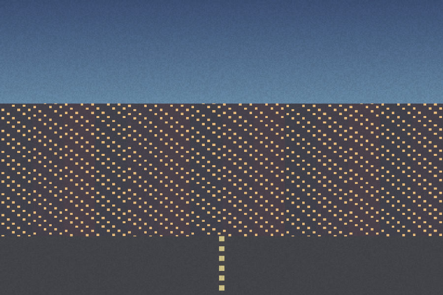
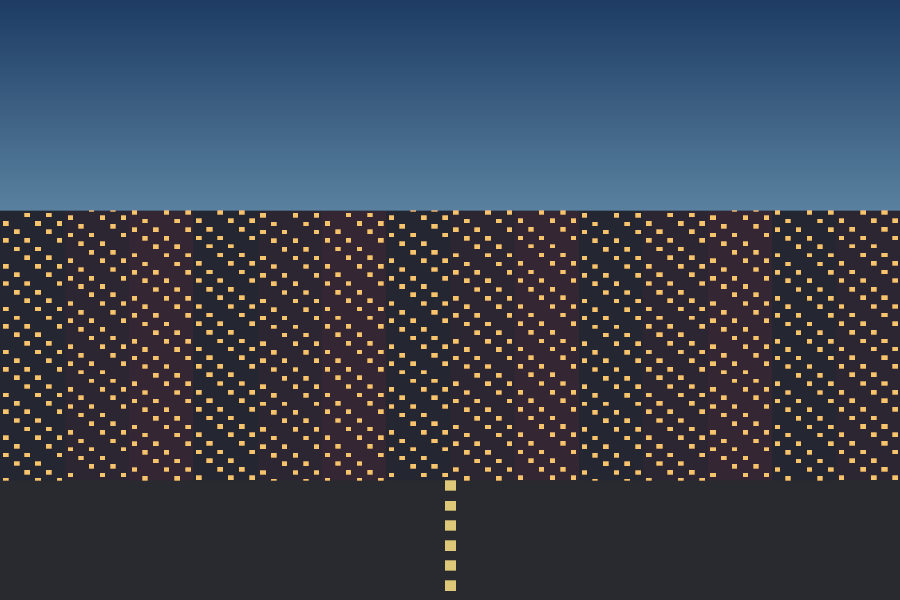
OriginalWith a lookDrag the handle, or use the arrow keys, to compare.
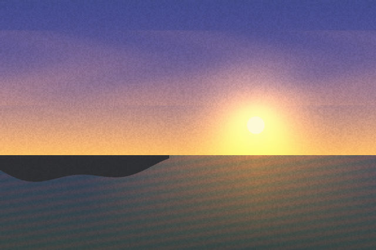
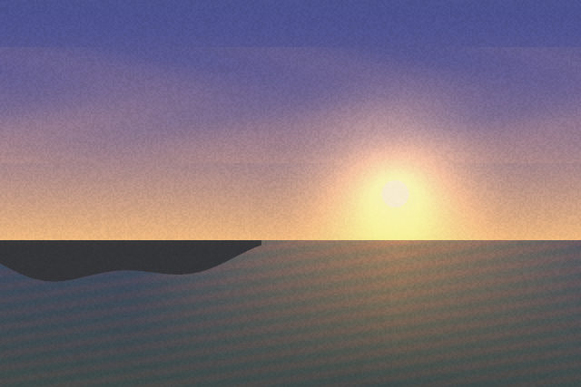
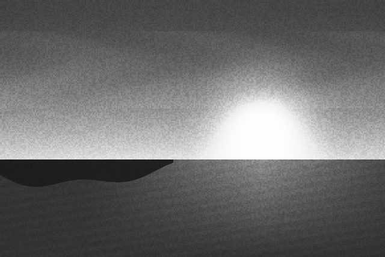
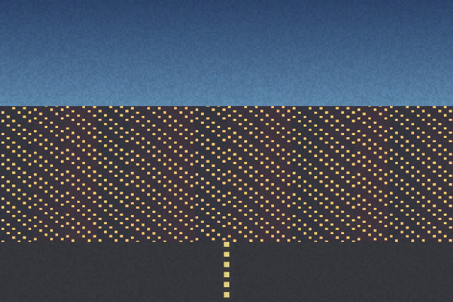
Frames
A film strip with its edge markings. An instant print with its white margin. A cinema crop. Frames are what set qFilm apart, and they are not locked in: a frame is an SVG and a small manifest, so you can design your own and import it.
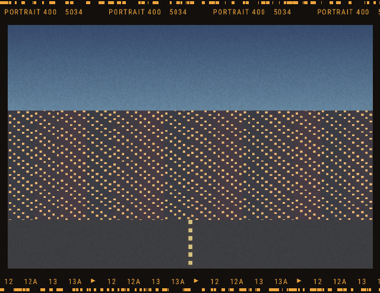
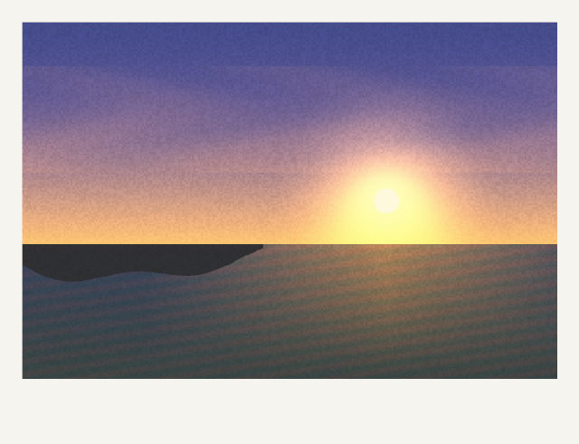
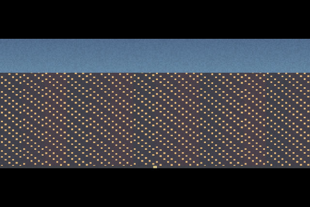
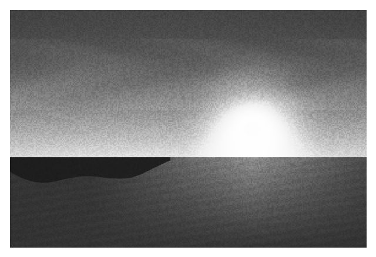
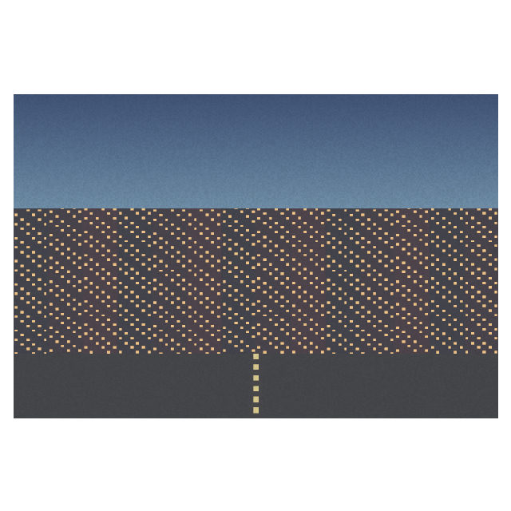
A frame is a folder with a manifest and an SVG. Draw it in Figma, import it as a .zip, a folder or by drag and drop, and its controls appear in the app.
Tools
No catalogue, no cloud, no sixty sliders. A focused set of tools, built to stay fast on large files.
Handles on the photo, common ratios, straighten up to 45°, quarter turns and flips. The crop is taken from your original pixels, never from the preview.

Free points, RGB or per channel, on a smooth curve that never overshoots. Drag on the graph; double-click removes a point.
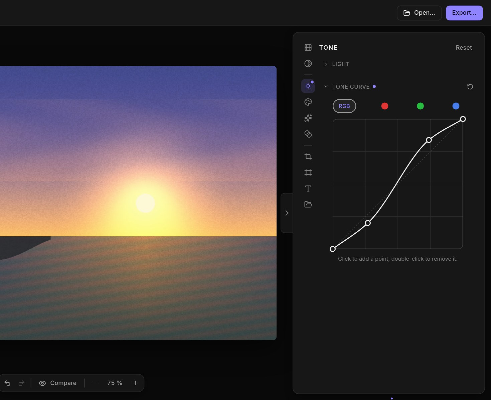
Eight hue bands for hue, saturation and luminance. Drain the colour and it becomes a black-and-white channel mixer.
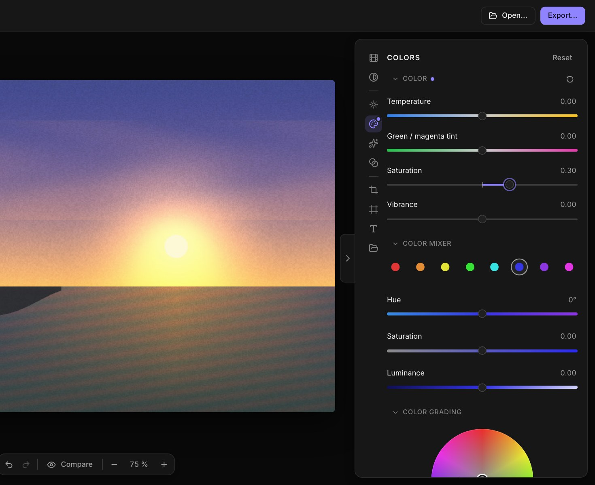
Linear and radial gradients for local light and colour, with their handles right on the photo.
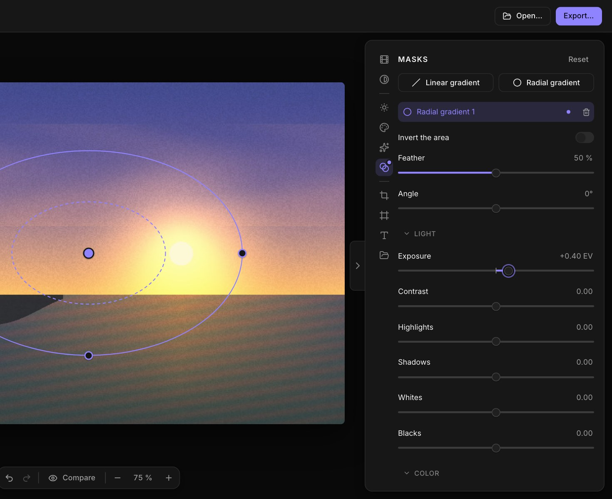
Privacy
No account, no upload, no analytics. qFilm never connects to the internet: your photos stay on your disk.
Orientation from EXIF, wide-gamut colours converted instead of misread, 16-bit TIFF export, the original EXIF kept on request.
A Rust imaging core and a native shell, not a bundled browser. Previews follow your sliders in a few tens of milliseconds.
Download
qFilm is free and open source under the MIT license. No account, no subscription.
Early access: public builds are not out yet
qFilm is not code-signed yet, so your system will ask for confirmation the first time.
You need Node and Rust 1.88 or newer. The README covers each system.
git clone https://github.com/D1nker/qfilm.git
cd qfilm
npm install
npm run app:buildQuestions
Yes. qFilm is free and open source under the MIT license: use it, change it, share it. There is no account, no subscription and no ads.
No, and it does not try to be. There is no catalogue and no cloud. qFilm is a focused studio for film looks, frames and captions, with the edits you actually reach for: curves, a colour mixer, colour grading, masks and crop.
Never. Your originals are read and left untouched, and exports go where you choose. The app does not connect to the internet at all.
You can open JPEG, PNG and TIFF, and export JPEG, PNG or 16-bit TIFF. RAW files are not supported yet. Photos are turned upright from their EXIF orientation, wide-gamut files (Display P3, Adobe RGB…) are converted to sRGB, and the original EXIF can be kept on export.
No. They are original looks inspired by how film behaves (soft contrast, colour casts, grain, halation), with generic names. None uses a brand name or claims to reproduce a particular emulsion.
Yes. A frame is an SVG and a small manifest file. Design it in Figma or any vector tool, then import it as a .zip, a folder, or by drag and drop. The guide is on GitHub.
macOS, Windows and Linux. qFilm is built with Tauri, so it is a small native app rather than a bundled browser.
The app and this site speak English and French. The app follows your system language and you can switch it in the preferences.
Open an issue on GitHub. Looks and frames are plain data files, so adding one is a good first contribution.